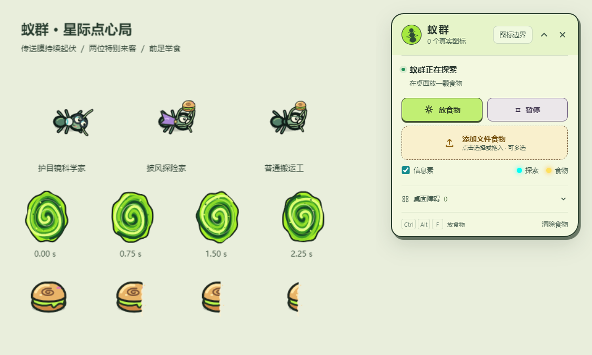
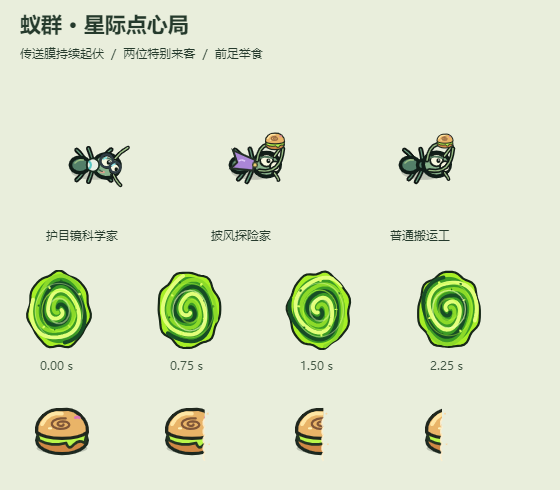

一个会自己长大的小世界
它们没有固定路线。
每只蚂蚁都只知道眼前的气味和脚下的障碍。路线会在探索、发现和回巢之间慢慢出现。

01
先探索，再记住
探索信息素和食物信息素会随时间衰减，旧路会淡，新路会被重新发现。
02
文件变成食物
从桌面选择一个或多个文件，图标会变成可搬运的馒头，文件名仍然留在原处。
03
每次搬运都有停顿
蚂蚁会嗅探、切割、叼起食物，再沿着逐渐清晰的路线回到左上角巢穴。

现在就让它住下来
下载一群自己的小邻居。
从 GitHub Release 获取最新版本。安装版支持应用内检查更新，免安装版下载后直接运行。